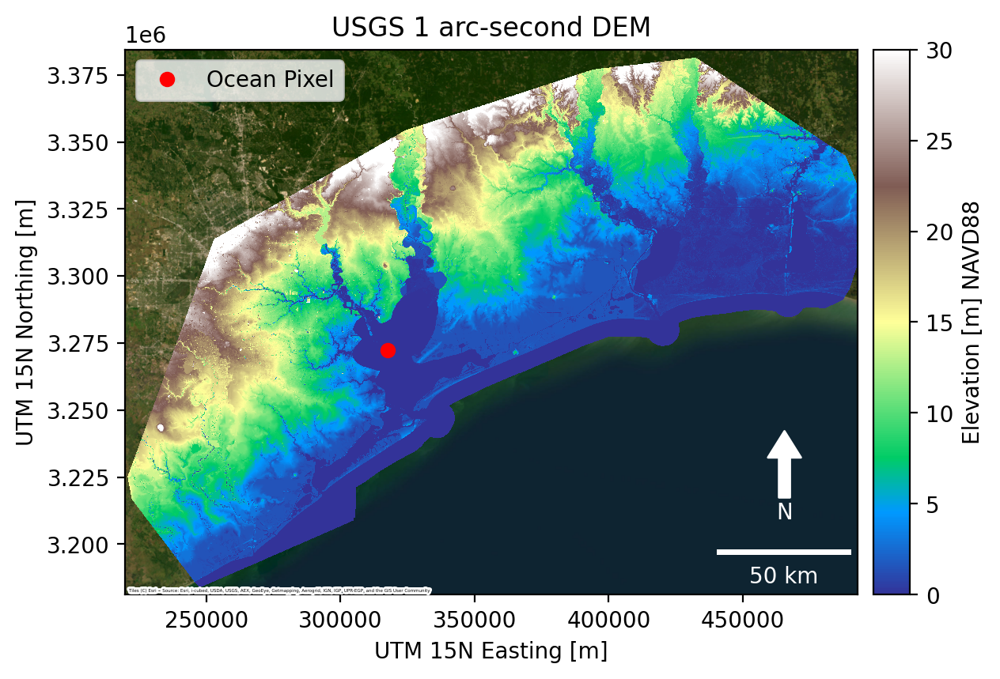
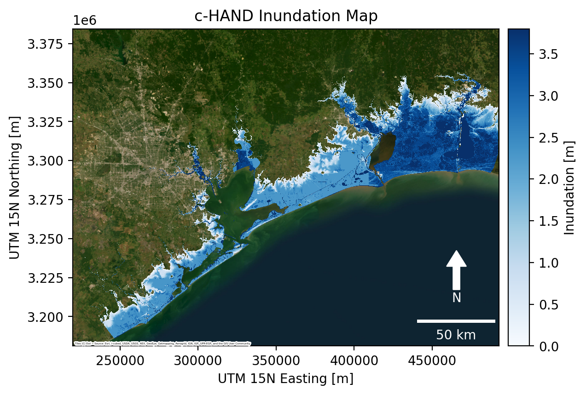

Coastal flood inundation mapping workflow¶
 ¶
¶
On Google Colab, run the following commands to install pygeoflood and other dependencies:
%pip install git+https://github.com/passah2o/pygeoflood
%pip install contextily matplotlib-scalebar
Import libraries¶
[1]:
from pathlib import Path
from pygeoflood import pyGeoFlood
Download example data if necessary¶
Resulting directory structure and file sizes: ``` data ├── aoi_coastline.geojson [5.7M] └── houston_example_DEM_30m.tif [121M]
[2]:
%%bash
# places input datasets in data directory whether or not it exists
if [ -d "data" ]; then
cd data
curl -sL https://utexas.box.com/shared/static/sx0n3rncb191nuwokqjpmu14yo38pw61.tgz | tar --strip-components=1 -xzvf -
else
curl -sL https://utexas.box.com/shared/static/sx0n3rncb191nuwokqjpmu14yo38pw61.tgz | tar -xzvf -
fi
x aoi_coastline.geojson
x houston_example_DEM_30m.tif
Instantiate pygeoflood model class¶
[3]:
pgf = pyGeoFlood(dem_path="data/houston_example_DEM_30m.tif")
Show DEM with ocean pixel location¶
[4]:
import contextily as cx
import geopandas as gpd
import matplotlib.pyplot as plt
import numpy as np
import rasterio as rio
from matplotlib_scalebar.scalebar import ScaleBar
from mpl_toolkits.axes_grid1 import make_axes_locatable
from rasterio.features import geometry_mask
from rasterio.plot import plotting_extent
from skimage.measure import label
def plot_raster(raster=None, profile=None, label=None, **kwargs):
fig, ax = plt.subplots(dpi=200)
# show inundation map
im = ax.imshow(
raster,
extent=plotting_extent(raster, profile["transform"]),
zorder=2,
**kwargs,
)
# add colorbar
divider = make_axes_locatable(ax)
cax = divider.append_axes("right", size="5%", pad=0.10)
fig.colorbar(im, cax=cax, label=label)
# add basemap
cx.add_basemap(
ax,
crs=profile["crs"],
source=cx.providers.Esri.WorldImagery,
zoom=10,
attribution_size=2,
zorder=1,
)
# add scalebar
ax.add_artist(ScaleBar(1, box_alpha=0, location="lower right", color="white"))
# add north arrow
x, y, arrow_length = 0.9, 0.3, 0.15
ax.annotate(
"N",
color="white",
xy=(x, y),
xytext=(x, y - arrow_length),
arrowprops=dict(facecolor="white", edgecolor="white", width=5, headwidth=15),
ha="center",
va="center",
fontsize=10,
xycoords=ax.transAxes,
)
return fig, ax
# 30m DEM of houston to use as example
with rio.open(pgf.dem_path) as ds:
dem = ds.read(1)
dem_profile = ds.profile
dem[dem == dem_profile["nodata"]] = np.nan
# UTM 15N Easting, Northing of a grid cell in the ocean
ocean_E, ocean_N = 317540, 3272260
fig, ax = plot_raster(
raster=dem,
profile=dem_profile,
label="Elevation [m] NAVD88",
interpolation="nearest",
vmax=30,
vmin=0,
cmap="terrain",
)
ax.plot(ocean_E, ocean_N, "ro", label="Ocean Pixel")
# add labels
ax.legend(loc="upper left")
ax.set(
title="USGS 1 arc-second DEM",
xlabel="UTM 15N Easting [m]",
ylabel="UTM 15N Northing [m]",
)
plt.show()

run c-HAND¶
[5]:
ocean_pixel = (ocean_E, ocean_N)
ike_gage = 3.8 # meters NAVD88
pgf.c_hand(ocean_coords=ocean_pixel, gage_el=ike_gage)
Running c_hand with parameters:
ocean_coords = (317540, 3272260)
xy = True
gage_el = 3.8
custom_dem = None
custom_path = None
Coastal inundation raster written to data/houston_example_DEM_30m_coastal_inundation.tif
c_hand completed in 5.5596 seconds
Crop out coastline and plot coastal inundation map¶
[6]:
# read coastal inundation map
with rio.open(pgf.coastal_inundation_path) as ds:
inun_ike = ds.read(1)
ike_profile = ds.profile
# read geojson or shapefile of domain with coastline
aoi_coast = gpd.read_file(Path("data", "aoi_coastline.geojson"))
aoi_coast_mask = geometry_mask(
aoi_coast.geometry,
inun_ike.shape,
dem_profile["transform"],
)
# crop array to coastline
inun_ike[aoi_coast_mask == True] = np.nan
inun_ike[inun_ike == 0] = np.nan
fig, ax = plot_raster(
raster=inun_ike,
profile=ike_profile,
label="Inundation [m]",
interpolation="nearest",
cmap="Blues",
vmax=ike_gage,
vmin=0,
)
# add labels
ax.set(
title="c-HAND Inundation Map",
xlabel="UTM 15N Easting [m]",
ylabel="UTM 15N Northing [m]",
)
plt.show()
# save figure
fig.savefig(Path("data", "inun_ike.png"), dpi=200, bbox_inches="tight")
